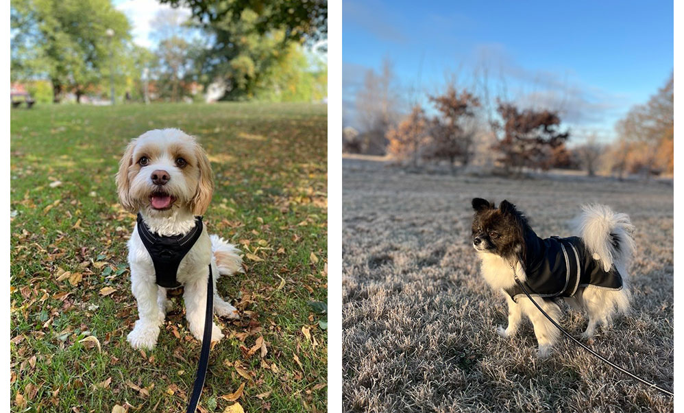
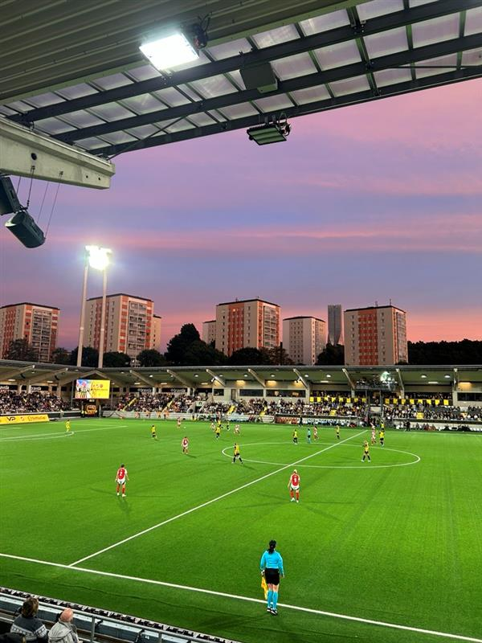

My name is Emelie and I’m 33 years old. Currently I live in Halmstad with my wife and our two dogs Sigge and Polly.
Sigge is a Bichon Havanais/Cavalier King Charles Spaniel mix and Polly is 70% Papillon, 15% Pomeranian and 15% Jack Russel.
Work & studies
I have been working as an E-commerce Coordinator at Blåkläder for the past seven years. I have a degree as an E-business Manager, and I have also continued studying during my time at Blåkläder in topics such as
Blåkläder is one of the leading manufacturers of workwear and I have experience from developing the E-commerce business within both B2B and B2C. User experience and data-driven decisions are some things I am extra passionate about. I coordinate internally and externally to constantly improve our digital business and drive growth. This includes collaboration with our developers that are located in both Sweden and Sri Lanka, as well as working closely with internal departments and stakeholders at Blåkläder.
I would like to improve my technical skills, to become more flexible in my work position and to be more creative and self-going. So here I am, taking this course in frontend development.
Read more about the course: IT: Tech for womenMy hobbies
I have played football all my life and I have always been very interested in sports. Due to some serious knee injuries, I'm not able to play anymore, but football is still my absolute biggest interest. Besides football, I like to go for long walks with the dogs and play padel tennis, travel and enjoy good food! My favourite team is BK Häcken and I have a seasonal ticket, so me and my wife watch all the home games at the arena and also travel to some away games every year.
My favourite places:- At Bravida, watching BK Häcken play
- Greece is nice
- Home, maybe in my bed (I like to sleep in, which never happpens)
